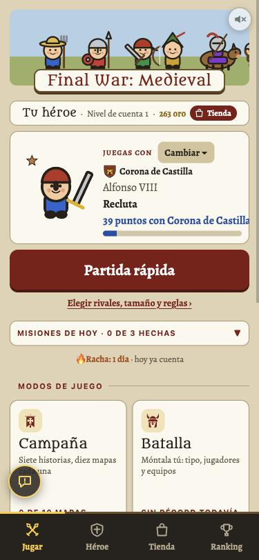
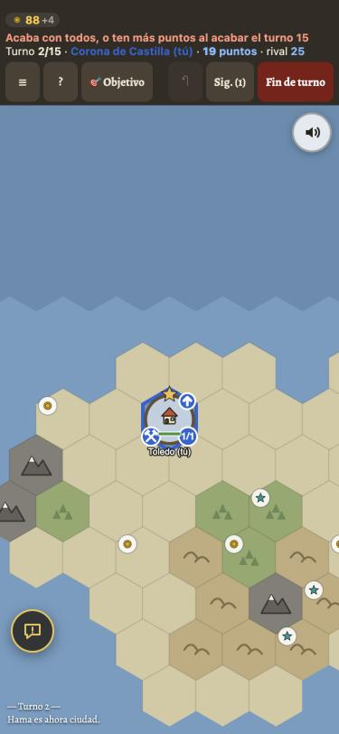

Juegos de estrategia parecidos al nuestro
Seis juegos con mapa y turnos. Dime cuál o cuáles te gustan y llevo su estilo a Final War.
Así está ahora Final War
Para comparar.


1 · The Battle of Polytopia
El más parecido al nuestro: hexágonos/casillas, turnos, móvil, tribus. Formas geométricas simples, colores limpios, menús planos y claros.


2 · Kingdom Rush
Medieval y de dibujos como nuestras figuras, pero con contorno grueso, colores ricos y botones con relieve de madera y metal.


3 · Civilization VI
Mapa de hexágonos por turnos. Dibujo de cuento, colores vivos, menús oscuros elegantes encima del mapa.


4 · Northgard
Vikingos y clanes en un mapa por territorios. Pintado a mano, cálido, menús con marcos de madera.


5 · Songs of Conquest
Estrategia medieval por turnos con héroes. Pixel art moderno, muy rico en detalle.


6 · Dorfromantik
Mapa de hexágonos tranquilo. Colores pastel, luz suave, interfaz mínima.